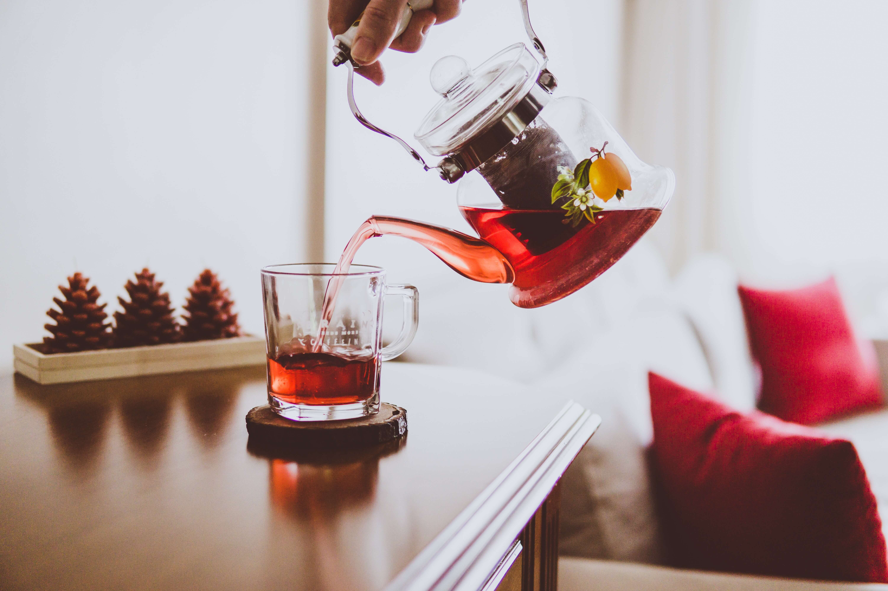

About Us
Created by two friends and inspired by their love for amazing tea, Janeiro Tea Shop was born in 2012 with the misson to bring the best available blends worldwide to Canada's capital of Ottawa.

From January to December
Janeiro means "January" in Portuguese, a month known for the frigid temperatures where a nice cup of tea can bring some much needed warmth. Here you can find enough variety to keep you warm or refreshed throughout the entire year.
The Best Blends Around
We search around the world for the best ingredients to create our own original blends. With sources from Thailand to Spain, we are constantly updating our product lists with new and rich flavors combining ingredients from many different places.
Our amazing team
-
Valerie Rogers
Founder & CEO
-
Katherine Bayer
Founder & CEO
-
Gloria Lopez
Marketing
-
Hui Zheng
Design
-
Eryn Zangari
IT
-
Oliver Steuben
Operations
-

Karam Ganapuli
Operations
-
Isabel Mendoza
Operations